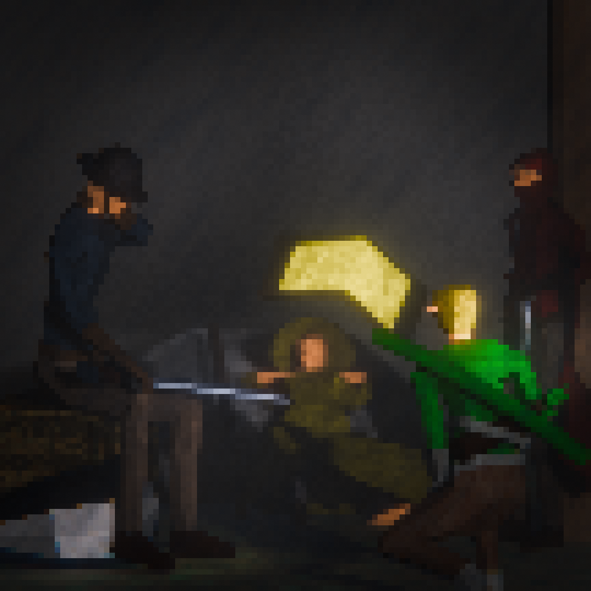
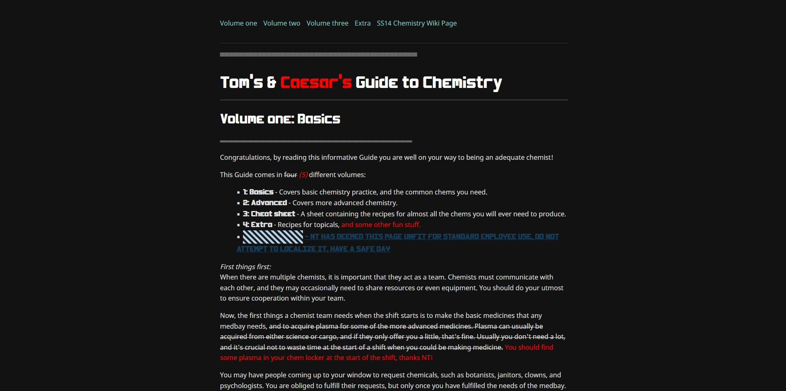

Jag vill jobba inom spel eller webbbranschen som UX-designer eller fullstack
utvecklare. Jag gillar att ta en idé från skiss till fungerande
prototyp, att göra den användbar, visuellt unik och tekniskt robust.
Jag har jobbat i många grupprojekt inom webbutveckling, byggt egna webbaserade projekt och ägnar mig åt
3D-modellering med fokus på karaktärer på fritiden.
Styrkor
UX / wireframes
Fullstack-utveckling
Iterativ prototyping
Responsiv design
3D-modellering & rendering
Animering & Interaktivitet
Teamwork / projekt arbete
Agil metodik & flexibel design process
Git samt Github hantering
Projekt

URVAL AV PROJEKT
Grupprojekt: [GraveFall]
GraveFall, Projektkurs 2 - större grupprojekt med design och implementation av
dataspel/interaktiv lösning. Arbetade med iterativ design, prototypning, testning, Git/agilt arbetssätt
och teknisk problemlösning. Roll som designer, programmerare, ljud, grafik, balansering och projektledare.
Marin Sonar - en mobilanpassad PWA applikation tänkt för fiskare, ger
dynamiskt anropad data om fiskeförhållanden för användaren samtidigt som appen är designad med olika
mikrointeraktioner och dynamiska interaktiva menyer som passar fiske temat.
Grupprojekt: [Get Food]
Roll: Interaktivitet (JS) & backend
GetFood, Projektkurs 1 - Utvecklade JavaScript-logik för fetch-anrop,
datahantering, kartfunktioner med Leaflet, felhantering och presentation av dynamiskt innehåll. Arbetade
med Git, kodgranskning och integration mot SMAPI.
IoT Lab för SMF - Byggde en användarvänlig prototyp i samarbete med forskare
vid Linnéuniversitetet. Ansvarade för programmering, datahantering, kundkontakt och delar av
fullstack-flödet.
Grupprojekt: [HPC för SMF]
Videoproduktion 1
HPC för SMF, Videoproduktion 1 - En filmproduktion för en klient (forskare
från Linnéuniversitetet) där en mässa och intervjuer filmades och sedan redigerades för att visa deras
projekt om High Performance Computing för Små och Medelstora Företagande. Roll som planerare med
storyboards, manus och synopsis; filmning med kamera, mikrofon, studio ljussättning och intervjuare;
redigering i DaVinci Resolve samt distribution till önskemål av kund som vi aktivt kommunicerade med.

Individuellt webbprojekt [Tom's & Caesar's Guide to Chemistry]
Roll: Designer & utvecklare
En webbguide jag byggde själv från grunden. Fokus på att lära ut information
om ett indie spel.
3D & Rendering
På fritiden ägnar jag mig åt 3D-modellering och rendering, med fokus på karaktärer
och figurer. Jag tycker om att skapa egna scener genom att kombinera gratis modeller med min egna design och
komposition. Utöver det har jag erfarenhet av att modellera, texturera och rigga mina egna objekt från
scratch.
Mitt kreativa fokus ligger på konstnärliga kompositioner, där jag ofta eftersträvar
en pixel-art-inspirerad stil direkt i Blender. Jag lägger stor vikt vid karaktärernas positionering,
scenplanering och hur Blenders compositing-verktyg kan användas för att förverkliga en unik visuell stil vid
varje skapelse.
Blender projekt, 3D
Blender projekt
Blender projekt, 3D- diverse hobbyprojekt i Blender på Bluesky där jag har skapat
fullproducerade modeller, texturer, ljussättning, ljudmixning, animeringar och renderingar. Alltså finns alla mina projekt som jag är mest nöjd med här.
Jag börjar med att definiera vad målgruppen försöker uppnå och
varför; detta styr alla designbeslut genom projektets gång.
2. Skissa & testa snabbt
Jag tar fram wireframes / prototyper och testar användarflödet tidigt
innan man lägger tid på detaljer.
3. Bygga funktioner
Antingen kodar jag själv eller samarbetar med andra i teamet för
att implementera det som testats och designats. Jag lägger fokus på skalbarhet och tydlighet om någon
annan ska jobba vidare på min kod.
4. Iterera
Jag justerar utifrån användar testad feedback och ser till att upplevelsen är
tydlig, snabb och snygg, inte bara att “det funkar”.
Kontakt
Vill du prata om praktik, juniorroll eller samarbete?
Roll: Designer, programmerare, ljud, grafik, balansering och projektledare
GraveFall, Projektkurs 2 - större grupprojekt med design och implementation av
dataspel/interaktiv lösning. Arbetade med iterativ design, prototypning, testning, Git/agilt arbetssätt och
teknisk problemlösning. Roll som designer, programmerare, ljud, grafik, balansering och projektledare.
Gravefall är ett deltarune/undertale-inspirerat rogue-like dungeon crawler-arkadspel. Det
kan spelas med 1-4 spelare som använder antingen ett tangentbord eller handkontroller. Det är en blandning av
strategi och turordningar där man väljer att utföra handlingar, samt ska man undvika fiendens projektiler och
attacker för att
inte ta skada.
Individuellt webbprojekt [Tom's & Caesar's Guide to Chemistry]
Roll: Allt (design, frontend, funktionalitet)
Ett individuellt projekt där jag designade och utvecklade en webbapplikation från grunden. Jag
byggde gränssnittet, strukturen och logiken. Fokus låg på en design som är enkel att läsa och informativ, samt att
utveckla information från andra källor om mer nischade spelmekaniker för indie spelet Space Station 14.
Tekniskt använde jag HTML, CSS och JS. En utmaning var att implementera text animationer på en
sida för att uppnå en "hacker effekt", som jag löste genom att med JavaScript applicera ett gaussiskt sudd över
texten när man skrollar neråt, samt att slumpmässigt byta ut bokstäver i all text styckvis tills de formade sina
korrekta meningar. (Fortfarande WIP)
Grupprojekt: [Get Food]
Roll: Interaktivitet (JS) & backend
GetFood, Projektkurs 1 - Utvecklade JavaScript-logik för fetch-anrop, datahantering,
kartfunktioner med Leaflet, felhantering och presentation av dynamiskt innehåll. Arbetade med Git, kodgranskning
och integration mot SMAPI.
Jag jobbade med ett team och tog fram en fungerande prototyp som hämtar JSON data från en API
och sedan dynamiskt renderar ut information om resturanger i kort. Den hämtar data baserat på användarens plats
(geolocation) eller utplacerad position inom Småland / Öland. Användare kan spara och sortera resturangerna i
anpassningsbara kategorier, samt spela ett "Tinder-liknande spel" spel för att få ut en kategori av mat som de
gillar mest. Det finns också en sida där man kan söka efter alla resturangers namn/kategorier.
Det var ett tufft men extremt lärorikt projekt som gav mig många lärdomar i dynamisk fetching,
sortering av stora mängder data samt att jobba effektivt med andra programmerare i ett mindre team. Vi
strukturerade upp våra arbetsuppgifter och deadlines på ett agilt samt flexibelt sätt för att lyckas med
projektet.
IoT Lab för SMF - Byggde en användarvänlig prototyp i samarbete med forskare vid
Linnéuniversitetet. Ansvarade för programmering, datahantering, kundkontakt och delar av fullstack-flödet.
Detta var ett projekt som pågick med en klient från Linnéuniversitetet där jag och två andra
formade ett team och designade en prototyp som skulle visa upp deras pilotstudier och projekt på ett stiligt sätt.
Här satt jag med implementeringen och visningen av all media på sidan, såsom bilder, videos, text o.s.v. Jag
skapade också ett sökfält som filtrerar och dynamiskt renderar pilot studierna. Jag skapade också ett smidigt sätt
att rendera ut de individuella projekten på en sida baserat på deras unika ID.
Jag jobbade med alla delar av projektet, från HTML, CSS och JS till data hantering i JSON
format. Jag jobbade nära med en annan grupp medlem och vi kooordinerade våra arbetsområden och commits på ett
bra sätt. Både klienten och teamet var väldigt nöjda med vår slutprototyp.
Individuelt webbprojekt: [Marin Sonar]
Roll: Fullstack-utveckling (HTML, CSS, JS, PWA)
Marin Sonar - en mobilanpassad PWA applikation tänkt för fiskare, ger dynamiskt anropad data
om fiskeförhållanden för användaren samtidigt som appen är designad med olika mikrointeraktioner och dynamiska
interaktiva menyer som passar fiske temat.
Jag jobbade själv med att designa, prototypa, användartesta och utveckla appen. Det tuffaste
som fanns med detta projekt var att testa så att lutfunktionaliteten funkade bra på mobilen, då jag utveckladen
den på datorn. Det skulle också vara kul att använda, så det krävdes väldigt många användartest för att se till så
att användare förstod hur de skulle använda appen korrekt.
Grupprojekt: [HPC för SMF]
Roll: Producent, regissör, intervjuare
HPC för SMF - en filmproduktion för en klient (forskare från
Linnéuniversitetet) där en mässa och intervjuer filmades och sedan redigerades för att visa deras projekt om High
Performance Computing för Små och Medelstora Företagande.
Roll som planerare med storyboards, manus och synopsis;
filmning med kamera, mikrofon, studio ljussättning och intervjuare; redigering i DaVinci Resolve samt distribution
till önskemål av kund som vi aktivt kommunicerade med. I samma kurs utförde vi också en livestream där jag satt i
mixingstudio och kontrollerade kamera, overlays och ljudmixning under Livestreamen.
Blender projekt
Roll: 3D-modellering, texturering, ljussättning, ljudmixning, animering och
rendering
Blender projekt, 3D- diverse hobbyprojekt i Blender på Bluesky där jag har skapat
fullproducerade modeller, texturer, ljussättning, ljudmixning, animeringar och renderingar. Alltså finns alla mina projekt som jag är mest nöjd med här.